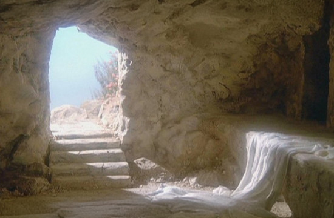

LIÇÕES BÍBLICAS CPAD
ADULTOS
2º Trimestre de 2025
Título: E o Verbo se fez carne — Jesus sob o olhar do Apóstolo do amor
Comentarista: Elienai Cabral
Lição 12: Do julgamento à ressurreição
Data: 22 de junho de 2025

TEXTO ÁUREO
“E, quando Jesus tomou o vinagre, disse: Está consumado. E, inclinando a cabeça, entregou o espírito.” (Jo 19.30).
VERDADE PRÁTICA
Na cruz, Jesus triunfou sobre o pecado; na Ressurreição, conquistou a vitória sobre a Morte.
LEITURA BÍBLICA EM CLASSE
João 19.17,18,28-30; 20.6-10.
João 19
17 — E, levando ele às costas a sua cruz, saiu para o lugar chamado Calvário, que em hebraico se chama Gólgota,
18 — onde o crucificaram, e, com ele, outros dois, um de cada lado, e Jesus no meio.
28 — Depois, sabendo Jesus que já todas as coisas estavam terminadas, para que a Escritura se cumprisse, disse: Tenho sede.
29 — Estava, pois, ali um vaso cheio de vinagre. E encheram de vinagre uma esponja e, pondo-a num hissopo, lha chegaram à boca.
30 — E, quando Jesus tomou o vinagre, disse: Está consumado. E, inclinando a cabeça, entregou o espírito.
João 20
6 — Chegou, pois, Simão Pedro, que o seguia, e entrou no sepulcro, e viu no chão os lençóis
7 — e que o lençol que tinha estado sobre a sua cabeça não estava com os lençóis, mas enrolado, num lugar à parte.
8 — Então, entrou também o outro discípulo, que chegara primeiro ao sepulcro, e viu, e creu.
9 — Porque ainda não sabiam a Escritura, que diz que era necessário que ressuscitasse dos mortos.
10 — Tornaram, pois, os discípulos para casa.
INTRODUÇÃO
Nesta lição, iremos abordar a prisão, a condenação, a crucificação, a morte, o sepultamento e a ressurreição de Jesus. Estes eventos demonstram o cumprimento da missão do nosso Salvador. Toda essa missão pode ser resumida na frase: “Está consumado”. A obra de Cristo no Calvário e a sua Ressurreição constituem a base da esperança cristã.
Palavra-Chave:
RESSURREIÇÃO
I. A PRISÃO E A CONDENAÇÃO DE JESUS
1. A prisão. Nos capítulos 17 e 18 deste Evangelho, após ter proferido o seu último discurso aos discípulos e os ter preparado para a traição de Judas Iscariotes, Jesus atravessou o ribeiro de Cedrom e fez uma paragem no Jardim do Getsêmani. Este jardim era também conhecido como “o Monte das Oliveiras”, devido à grande quantidade de oliveiras que ali existia. Naquela madrugada, o ambiente neste local parecia carregado de tristeza e angústia. Os soldados romanos e os membros da guarda do sumo sacerdote foram guiados por Judas Iscariotes até ao local onde Jesus se encontrava com os seus discípulos. Tendo concordado com a traição em troca de 30 moedas de prata, o traidor identificou Jesus com um beijo traiçoeiro, indicando aos soldados romanos quem Ele era, levando à sua prisão e conduzindo-o até Anás, o sumo sacerdote, para ser interrogado. Em seguida, depois de ter sido agredido, o nosso Senhor foi levado perante o governador Pilatos (18.28 — 19.6).
2. O interrogatório. De início, Pilatos questiona a acusação feita pelos judeus. Jesus fora detido durante a madrugada e, ao amanhecer, depois de ter passado pela casa de Caifás, o sumo sacerdote, os judeus preferiram que a condenação viesse do governador Pilatos. Assim, levaram Jesus até ele, apesar de este preferir que fossem os próprios judeus a julgar Jesus conforme as leis judaicas (Jo 18.28,31). Por sua vez, Pilatos, na tentativa de aliviar a pressão política dos judeus, cedeu à hostilidade deles e decidiu colocar Jesus ao lado de Barrabás (18.38-40). Este último era um criminoso notório e escolheram libertá-lo em vez de desistirem da crucificação de Jesus. O ódio religioso do povo era tão intenso que eles não conseguiam ver nada que pudesse impedir a condenação de Jesus.
3. A condenação. Pilatos mandou que Jesus fosse açoitado e, posteriormente, os soldados romanos, para o humilhá-lo ainda mais, colocaram sobre a sua cabeça uma “coroa de espinhos afiados”, provocando-lhe ferimentos e fazendo o sangue escorrer pelo seu rosto. Essa era uma maneira de escarnecer da sua suposta realeza. O instrumento utilizado para os castigos era um chicote com tiras de couro afiadas, que tinham pedaços de ossos ou pedras cortantes na ponta. Jesus foi ferido e teve a sua carne dilacerada pelos golpes (Jo 19.1,2). Nesse momento, nosso Senhor assumiu as nossas enfermidades e dores; foi afligido e oprimido, foi castigado pelas nossas transgressões e iniquidades; cumprindo assim a profecia do profeta Isaías (Is 53.4,5).
II. CRUCIFICAÇÃO, MORTE E SEPULTAMENTO DE JESUS
1. O caminho do Calvário. Após a tentativa de Pilatos evitar a crucificação e libertar Jesus, não conseguiu impedir o castigo mais severo. Finalmente, no versículo 16, lê-se: “Então, entregou-lho, para que fosse crucificado” (Jo 19.16). Sob os açoites dos soldados, Jesus carregava a sua cruz até chegar ao Gólgota, local conhecido como “Lugar da Caveira”, devido à forma que o monte apresentava. Em João 19.18, menciona-se que o “Gólgota” era um lugar público onde as pessoas podiam testemunhar o horrível drama ao qual os soldados romanos submetiam os condenados. Nos Evangelhos Sinóticos (Mateus, Marcos e Lucas), foram registrados detalhes sobre os eventos durante a crucificação do Senhor. Ao lado de Jesus, à sua esquerda e à sua direita, estavam dois outros homens acusados como criminosos (Lc 23.40-43), sendo que Lucas narra o arrependimento de um deles enquanto o outro zombava de Jesus. É curioso notar que o profeta Isaías também mencionou isso anteriormente, no capítulo 53.12, afirmando que ele “foi contado com os transgressores”.
2. A missão foi encerrada. Como homem, Jesus experimentou a sede, que foi a sua última necessidade humana, antes de morrer na cruz. A sua sede física foi momentânea e aliviada por uma esponja, que não continha água, mas vinagre, oferecida pelos soldados romanos. Ao pedir “água para saciar sua sede”, nosso Senhor tinha plena consciência de que a Escritura estava se cumprindo e que aquele momento final “como homem” se aproximava. Assim, ciente de que sua missão na Terra estava completada (v.28), não hesitou em proclamar a vitória do plano divino ao afirmar: “Está consumado!” (Jo 19.30). A obra de Jesus estava concluída. O seu grito não era de derrota, mas sim uma declaração da realização de uma tarefa confiada pelo Pai.
3. O Sepultamento. No versículo 38, aparece um homem que admirava Jesus e era um discípulo discreto e reservado, chamado José de Arimateia. Ele fazia parte do Sinédrio (Mc 15.43) e era uma pessoa abastada (Mt 27.57). Devido ao temor que tinha dos judeus, mantinha-se afastado dos discípulos, mas conseguiu vencer esse medo ao reunir coragem para se dirigir a Pilatos e solicitar o corpo de Jesus para o sepultamento (Jo 19.42). A informação contida no texto sugere que o túmulo onde Jesus foi sepultado não ficava longe do Monte do Calvário.
III. A RESSURREIÇÃO DE JESUS
1. O Túmulo Vazio. Na manhã do primeiro dia da semana (domingo), ocorreu um terremoto na área do sepulcro, e um anjo de Deus deslocou a pedra, sentando-se sobre ela (Mt 28.2). Foi nesse instante que Jesus ressuscitou do lugar onde o seu corpo se encontrava. O túmulo ficou vazio, servindo como uma evidência clara da ressurreição de Jesus dentre os mortos. No Evangelho de João, é relatado que, após o sábado judaico, Maria Madalena dirigiu-se ao sepulcro (Jo 20.1), acompanhada por Maria, mãe de Tiago, e Salomé (Mc 16.1-3), com a intenção de ungir o corpo de Jesus. Ao chegarem lá, a pedra já tinha sido retirada (Mc 16.4) e ao entrarem no sepulcro escavado na rocha, não encontraram o corpo de Jesus. O túmulo estava vazio.
2. A Ressurreição como base da Fé Cristã. Em sua abordagem sobre a importância da Ressurreição, o apóstolo Paulo dirigiu-se aos coríntios afirmando que “Cristo ressuscitou dos mortos” e que, se essa afirmação não fosse verdadeira, a nossa fé e a nossa mensagem seriam inúteis (1Co 15.12-14). Existem pelo menos duas razões para crermos na ressurreição do Senhor. A primeira baseia-se nas palavras de Jesus que afirmara ser necessário que Ele ressuscitasse dentre os mortos (Jo 20.9). A segunda razão é o fato de Pedro e João terem verificado que Jesus já não estava no sepulcro quando souberam do túmulo vazio (20.6,7). No entanto, quando Maria Madalena olhou novamente para dentro do túmulo e viu dois anjos de Deus que lhe asseguraram que Jesus estava vivo, ela não conseguiu imaginar que seria a primeira pessoa a contemplar Jesus de forma gloriosa (Jo 20.11-17). Ele a instruiu para comunicar aos discípulos que Ele estava vivo e que brevemente teriam a oportunidade de vê-lo também (20.18,19).
3. O Cristo Ressurreto quebra a incredulidade. Apesar do receio e da incredulidade de alguns dos discípulos, mesmo após ouvirem o testemunho de Pedro e João, e em especial, de Maria Madalena, que viu Jesus e falou com Ele pessoalmente, Jesus apareceu entre os discípulos no primeiro dia da semana. Ele surgiu no meio deles e disse: “Paz seja convosco!” (Jo 20.19). Em outras ocasiões, nosso Senhor também se manifestou aos discípulos antes da sua ascensão ao céu (Jo 21.1,2). A Pedro e a alguns outros que o seguiam, Jesus revelou-se novamente e realizou o milagre da pesca abundante (Jo 21.3-11), uma prova do poder do Cristo ressuscitado. Seria impossível permanecer incrédulo depois de testemunhar o Cristo que venceu a morte.
CONCLUSÃO
A Ressurreição do Senhor Jesus é o evento mais significativo do Novo Testamento. Este acontecimento concretiza a nossa esperança na Ressurreição do Corpo, tal como está expresso no Credo Apostólico, um importante documento da tradição cristã: “Creio na ressurreição da carne”. Assim, à luz deste fato, somos encorajados a manter a nossa fé, pois depositamos a nossa esperança naquEle que triunfou sobre a morte de forma definitiva.
REVISANDO O CONTEÚDO
1. De que maneira Jesus foi reconhecido e traído por Judas?
Tendo concordado com a traição em troca de 30 moedas de prata, o traidor identificou Jesus com um beijo traiçoeiro, indicando aos soldados romanos quem Ele era.
2. Em que momento se concretizou a profecia de Isaías?
Jesus foi ferido e teve a sua carne dilacerada pelos golpes (Jo 19.1,2). Nesse momento, nosso Senhor assumiu as nossas enfermidades e dores; foi afligido e oprimido, foi castigado pelas nossas transgressões e iniquidades; cumprindo assim a profecia do profeta Isaías (Is 53.4,5).
3. De acordo com Isaías 53-12, o que se realizou durante a crucificação de Jesus?
Ao lado de Jesus, à sua esquerda e à sua direita, estavam dois homens acusados como criminosos. É curioso notar que o profeta Isaías também mencionou isso anteriormente, no capítulo 53.12, afirmando que ele “foi contado com os transgressores”.
4. Segundo a lição, quem acompanhava Maria Madalena na visita ao túmulo?
Maria Madalena dirigiu-se ao sepulcro (Jo 20.1), acompanhada por Maria, mãe de Tiago, e Salomé (Mc 16.1-3), com a intenção de ungir o corpo de Jesus.
5. Indique uma das razões plausíveis para acreditar na ressurreição do Senhor Jesus.
A primeira baseia-se nas palavras de Jesus que afirmara ser necessário que Ele ressuscitasse dentre os mortos (Jo 20.9).